1 Giới thiệu về phân tích dữ liệu
1.1 Phân tích dữ liệu và quy trình
- Phân tích Mô tả (Descriptive Analytics): Cái gì đã xảy ra?
- Sử dụng các hệ thống BI (Business Intelligence) hiện đại, dashboard tương tác thời gian thực để tổng hợp và trực quan hóa luồng dữ liệu liên tục.
- Phân tích Chẩn đoán (Diagnostic Analytics): Tại sao nó xảy ra?
- Vượt mốc thống kê đơn thuần để tìm ra nguyên nhân gốc rễ.
- Ngày nay, bước này đang dịch chuyển mạnh mẽ từ việc tìm kiếm sự tương quan (correlation) sang xác định mối quan hệ nhân quả (causation) thông qua các mô hình đồ thị nhân quả (Causal DAGs) và thực nghiệm số hóa.
- Phân tích Dự báo (Predictive Analytics): Điều gì sẽ xảy ra?
- Sử dụng các thuật toán Học máy (Machine Learning) và Học sâu (Deep Learning) để khai phá các mẫu ẩn (hidden patterns) từ dữ liệu lịch sử nhằm dự đoán xu hướng tương lai.
- Phân tích Khuyến nghị (Prescriptive Analytics): Nên làm gì tiếp theo?
- Mức độ cao nhất, nơi hệ thống không chỉ dự báo mà còn đề xuất các phương án hành động tối ưu hoặc tự động ra quyết định thông qua các mô hình tối ưu hóa toán học và Học tăng cường (Reinforcement Learning).
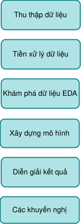
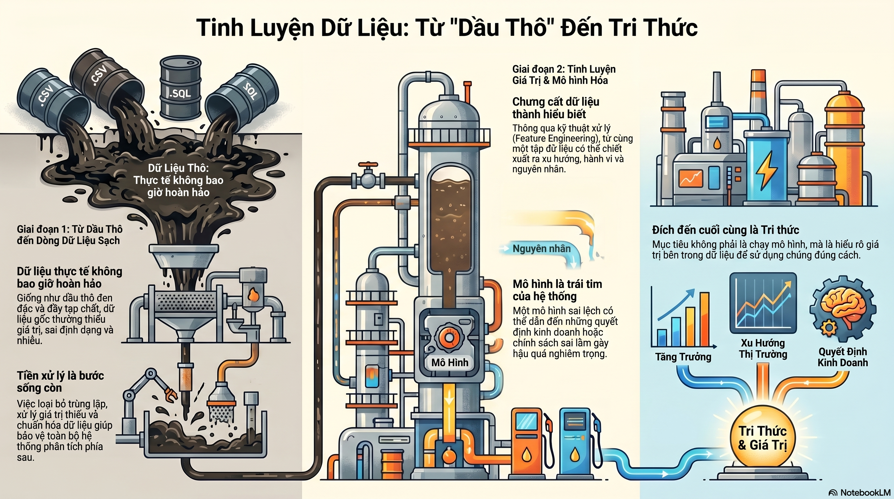
1.2 Các dạng dữ liệu
Dữ liệu dạng bảng (Tabular data)
Định nghĩa:
Dữ liệu dạng bảng là dữ liệu được tổ chức theo cấu trúc hàng (rows) và cột (columns), trong đó:
- Mỗi hàng đại diện cho một quan sát (observation)
- Mỗi cột đại diện cho một biến (feature/attribute)
Ví dụ:
| ID | Tuổi | Thu nhập | Giới tính |
|---|---|---|---|
| 1 | 25 | 10 triệu | Nam |
| 2 | 30 | 15 triệu | Nữ |
Đặc điểm:
- Không có yếu tố thời gian bắt buộc
- Các quan sát thường độc lập với nhau
- Là dạng dữ liệu phổ biến nhất trong machine learning (classification, regression)
Dữ liệu chuỗi thời gian (Time Series Data)
Định nghĩa:
Dữ liệu chuỗi thời gian là dữ liệu trong đó các quan sát được thu thập theo thứ tự thời gian, và thứ tự này có ý nghĩa quan trọng.
Ví dụ:
| Thời gian | Giá cổ phiếu |
|---|---|
| 01/01 | 100 |
| 02/01 | 102 |
| 03/01 | 101 |
Đặc điểm:
Có phụ thuộc theo thời gian (temporal dependency)
Thường có các tính chất như:
- xu hướng (trend)
- mùa vụ (seasonality)
Thứ tự dữ liệu không được phép xáo trộn
Dùng trong forecasting (dự báo)
Dữ liệu bảng (Panel Data)
Định nghĩa:
Dữ liệu bảng là sự kết hợp giữa dữ liệu dạng bảng và chuỗi thời gian, tức là:
Theo dõi nhiều đối tượng (entities) qua nhiều thời điểm
Ví dụ:
| ID | Thời gian | Thu nhập |
|---|---|---|
| A | 2020 | 10 |
| A | 2021 | 12 |
| B | 2020 | 8 |
| B | 2021 | 9 |
Đặc điểm:
- Có 2 chiều:
- chiều cá thể (cross-sectional)
- chiều thời gian (time dimension)
- Cho phép phân tích:
- sự thay đổi theo thời gian
- sự khác biệt giữa các cá thể
- Rất quan trọng trong kinh tế lượng nhân quả (causal inference)
1.3 Biến và quan sát
Khảo sát lớp học
Một cuộc khảo sát đã được thực hiện trong các sinh viên khóa học “phân tích dữ liệu”. Dưới đây là một vài câu hỏi trong khảo sát và các biến (variables) tương ứng mà dữ liệu từ các câu trả lời:
gender: Giới tính của bạn là gì?intro_extra: Bạn coi mình là người hướng nội hay hướng ngoại?sleep: Trung bình bạn ngủ bao nhiêu giờ mỗi đêm?bedtime: Bạn thường đi ngủ lúc mấy giờ?countries: Bạn đã đến thăm bao nhiêu quốc gia?dread: Trên thang điểm 1-5, bạn sợ hãi việc có mặt ở đây đến mức nào?
Tập dữ liệu
Dữ liệu được thu thập trên các sinh viên trong một lớp thống kê về nhiều biến số khác nhau:
| SV. | gender |
intro_extra |
\(\cdots\) | dread |
|---|---|---|---|---|
| 1 | nam | hướng ngoại | \(\cdots\) | 3 |
| 2 | nữ | hướng ngoại | \(\cdots\) | 2 |
| 3 | nữ | hướng nội | \(\cdots\) | 4 |
| 4 | nữ | hướng ngoại | \(\cdots\) | 2 |
| \(\vdots\) | \(\vdots\) | \(\vdots\) | \(\vdots\) | \(\vdots\) |
| 86 | nam | hướng ngoại | \(\cdots\) | 3 |
Các loại biến
Các loại biến số
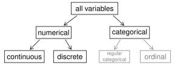
gender |
sleep |
bedtime |
countries |
dread |
|
|---|---|---|---|---|---|
| 1 | nam | 5 | 12-2 | 13 | 3 |
| 2 | nữ | 7 | 10-12 | 7 | 2 |
| 3 | nữ | 5.5 | 12-2 | 1 | 4 |
| 4 | nữ | 7 | 12-2 | 2 | |
| 5 | nữ | 3 | 12-2 | 1 | 3 |
| 6 | nữ | 3 | 12-2 | 9 | 4 |
gender: phân loại (categorical)sleep: số (numerical), liên tục (continuous)bedtime: phân loại (categorical), thứ bậc (ordinal)countries: số (numerical), rời rạc (discrete)dread: phân loại (categorical), thứ bậc (ordinal) - cũng có thể được sử dụng như dạng số
✍ Luyện tập
Mã vùng điện thoại thuộc loại biến nào?
- số, liên tục
- số, rời rạc
- phân loại
- phân loại, thứ bậc
Mối quan hệ giữa các biến
Có vẻ như có mối quan hệ giữa điểm trung bình (GPA) và số giờ học sinh học mỗi tuần không?
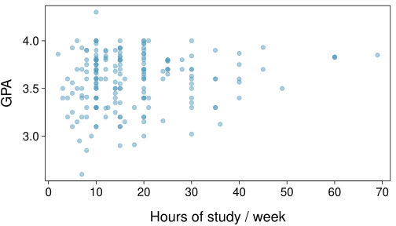
Bạn có nhận thấy điều gì bất thường về bất kỳ điểm dữ liệu nào không?
Có một sinh viên có GPA > 4.0, đây có khả năng là một lỗi dữ liệu.
Biến giải thích và biến phản hồi
Biến giải thích và biến phản hồi
Để xác định biến giải thích (explanatory variable) trong một cặp biến, hãy xác định xem biến nào trong hai biến được nghi ngờ là có ảnh hưởng đến biến kia:
biến giải thích \(\xrightarrow{có~thể~ảnh~hưởng}\) biến phản hồi (response variable)
Việc gắn nhãn các biến là biến giải thích và biến phản hồi không đảm bảo mối quan hệ giữa hai biến thực sự là quan hệ nhân quả (causal), ngay cả khi có một sự liên kết (association) được xác định giữa hai biến. Chúng ta sử dụng các nhãn này chỉ để theo dõi biến nào chúng ta nghi ngờ có ảnh hưởng đến biến kia.
Giới thiệu các nghiên cứu quan sát và thí nghiệm
Hai loại thu thập dữ liệu chính
- Nghiên cứu quan sát (Observational studies): Thu thập dữ liệu theo cách không can thiệp trực tiếp vào cách dữ liệu phát sinh (ví dụ: khảo sát).
- Có thể cung cấp bằng chứng về một mối liên quan xuất hiện tự nhiên giữa các biến, nhưng tự thân chúng không thể cho thấy một kết nối nhân quả.
- Thí nghiệm (Experiment): Các nhà nghiên cứu phân bổ ngẫu nhiên các đối tượng vào các phương pháp can thiệp khác nhau nhằm thiết lập các kết nối nhân quả giữa biến giải thích và biến phản hồi.
Quan hệ liên kết vs. Quan hệ nhân quả
- Khi hai biến cho thấy một số kết nối với nhau, chúng được gọi là các biến có liên kết (associated).
- Các biến có liên kết cũng có thể được gọi là các biến phụ thuộc (dependent) và ngược lại.
- Nếu hai biến không có liên kết, tức là không có kết nối rõ ràng giữa hai biến, thì chúng được gọi là độc lập (independent).
- Nhìn chung, sự liên kết không hàm ý quan hệ nhân quả (causation), và quan hệ nhân quả chỉ có thể được suy ra từ một thí nghiệm ngẫu nhiên.
✍ Luyện tập
Dựa trên biểu đồ phân tán (scatterplot) ở bên phải, câu nào sau đây là đúng về chiều dài đầu và chiều dài hộp sọ của thú có túi?
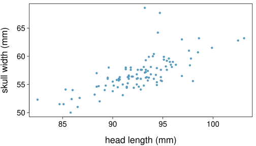
- Không có mối quan hệ nào giữa chiều dài đầu và chiều rộng hộp sọ, tức là các biến độc lập với nhau.
- Chiều dài đầu và chiều rộng hộp sọ có liên kết dương.
- Chiều rộng hộp sọ và chiều dài đầu có liên kết âm.
- Đầu dài hơn khiến hộp sọ rộng hơn.
- Hộp sọ rộng hơn khiến đầu dài hơn.
1.4 Các phương pháp lấy mẫu
Quần thể và mẫu
Quần thể và mẫu
Câu hỏi nghiên cứu: Con người có thể trở thành những người chạy bộ tốt hơn, hiệu quả hơn một cách tự thân, chỉ đơn giản bằng việc chạy bộ không?
Quần thể (Population) quan tâm: Tất cả mọi người
Mẫu (Sample): Nhóm phụ nữ trưởng thành vừa mới tham gia một nhóm chạy bộ
Quần thể mà kết quả có thể được tổng quát hóa: Phụ nữ trưởng thành, nếu dữ liệu được lấy mẫu ngẫu nhiên
Bằng chứng giai thoại
Bằng chứng giai thoại và nghiên cứu sớm về hút thuốc
- Nghiên cứu chống hút thuốc bắt đầu vào những năm 1930 và 1940 khi việc hút thuốc lá ngày càng trở nên phổ biến. Trong khi một số người hút thuốc có vẻ nhạy cảm với khói thuốc lá, những người khác hoàn toàn không bị ảnh hưởng.
- Nghiên cứu chống hút thuốc đã phải đối mặt với sự kháng cự dựa trên bằng chứng giai thoại (anecdotal evidence) chẳng hạn như “Chú tôi hút ba bao một ngày và ông ấy vẫn hoàn toàn khỏe mạnh”, bằng chứng dựa trên kích thước mẫu hạn chế có thể không đại diện cho quần thể.
- Người ta kết luận rằng “hút thuốc là một hành vi phức tạp của con người, về bản chất rất khó nghiên cứu, bị gây nhiễu bởi sự biến thiên của con người.”
- Theo thời gian, các nhà nghiên cứu đã có thể kiểm tra các mẫu trường hợp (người hút thuốc) lớn hơn, và các xu hướng cho thấy hút thuốc có những tác động tiêu cực đến sức khỏe đã trở nên rõ ràng hơn nhiều.
Brandt, The Cigarette Century (2009), Basic Books.
Chọn mẫu từ một quần thể
Điều tra dân số
- Chẳng phải sẽ tốt hơn nếu chỉ cần bao gồm tất cả mọi người và “lấy mẫu” toàn bộ quần thể sao?
- Điều này được gọi là điều tra dân số (census).
- Có những vấn đề với việc thực hiện điều tra dân số:
- Có thể khó hoàn thành một cuộc điều tra dân số: luôn có vẻ như có một số cá nhân khó xác định vị trí hoặc khó đo lường. Và những người khó tìm thấy này có thể có những đặc điểm nhất định giúp phân biệt họ với phần còn lại của quần thể.
- Quần thể hiếm khi đứng yên. Ngay cả khi bạn có thể thực hiện điều tra dân số, quần thể vẫn thay đổi liên tục, vì vậy không bao giờ có thể có được một phép đo hoàn hảo.
- Việc thực hiện điều tra dân số có thể phức tạp hơn việc chọn mẫu.
Từ phân tích khám phá đến suy diễn
- Chọn mẫu là điều tự nhiên.
- Hãy nghĩ về việc nếm thử món gì đó bạn đang nấu - bạn nếm (kiểm tra) một phần nhỏ của món bạn đang nấu để có ý tưởng về toàn bộ món ăn.
- Khi bạn nếm một thìa súp và quyết định rằng thìa súp bạn nếm không đủ mặn, đó là phân tích khám phá (exploratory analysis).
- Nếu bạn tổng quát hóa và kết luận rằng toàn bộ nồi súp của bạn cần thêm muối, đó là một suy diễn (inference).
- Để suy diễn của bạn có giá trị, thìa súp bạn đã nếm (mẫu) cần phải mang tính đại diện (representative) cho toàn bộ nồi (quần thể).
- Nếu thìa súp của bạn chỉ lấy từ bề mặt và muối tập trung ở dưới đáy nồi, thì những gì bạn nếm có thể không đại diện cho toàn bộ nồi.
- Nếu đầu tiên bạn khuấy đều súp trước khi nếm, thìa súp của bạn sẽ có nhiều khả năng đại diện cho toàn bộ nồi hơn.
Chệch hướng chọn mẫu
- Không phản hồi (Non-response): Nếu chỉ một phần nhỏ những người được lấy mẫu ngẫu nhiên chọn trả lời khảo sát, mẫu đó có thể không còn đại diện cho quần thể nữa.
- Phản hồi tự nguyện (Voluntary response): Xảy ra khi mẫu bao gồm những người tình nguyện trả lời vì họ có ý kiến mạnh mẽ về vấn đề đó. Một mẫu như vậy cũng sẽ không đại diện cho quần thể.
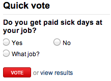
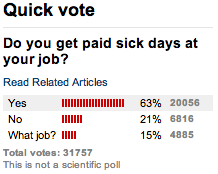
cnn.com, Jan 14, 2012
- Mẫu thuận tiện (Convenience sample): Những cá nhân dễ dàng tiếp cận có nhiều khả năng được đưa vào mẫu hơn.
Ví dụ về chệch hướng chọn mẫu: Landon so với FDR
Một ví dụ lịch sử về một mẫu bị chệch hướng mang lại kết quả sai lệch:
Năm 1936, Landon tìm cách giành được đề cử tổng thống của Đảng Cộng hòa chống lại sự tái đắc cử của FDR.
Cuộc thăm dò của The Literary Digest
- Tờ Literary Digest đã thăm dò ý kiến của khoảng 10 triệu người Mỹ và nhận được phản hồi từ khoảng 2,4 triệu người.
- Cuộc thăm dò cho thấy Landon có khả năng sẽ là người chiến thắng áp đảo và FDR sẽ chỉ nhận được 43% số phiếu bầu.
- Kết quả bầu cử: FDR thắng với 62% số phiếu bầu.
- Tạp chí này đã hoàn toàn bị mất uy tín vì cuộc thăm dò và sớm bị ngừng xuất bản.
Cuộc thăm dò của The Literary Digest – điều gì đã sai?
- Tạp chí đã khảo sát
- độc giả của chính mình,
- những người sở hữu ô tô đã đăng ký, và
- những người sử dụng điện thoại đã đăng ký.
- Những nhóm này có thu nhập cao hơn nhiều so với mức trung bình quốc gia thời bấy giờ (hãy nhớ rằng, đây là thời kỳ Đại khủng hoảng), điều này dẫn đến danh sách những cử tri có nhiều khả năng ủng hộ Đảng Cộng hòa hơn so với một cử tri điển hình thực sự vào thời điểm đó, tức là mẫu không đại diện cho quần thể người Mỹ lúc bấy giờ.
Các mẫu lớn là đáng ưu tiên, nhưng…
- Cuộc thăm dò bầu cử của Literary Digest dựa trên kích thước mẫu là 2,4 triệu người, một con số khổng lồ, nhưng vì mẫu bị chệch hướng (biased), nên mẫu đã không đưa ra được một dự đoán chính xác.
- Quay lại ví dụ về nồi súp: Nếu súp không được khuấy đều, thì cái thìa của bạn có lớn đến đâu cũng không quan trọng, súp vẫn sẽ không có vị chuẩn. Nếu súp được khuấy đều, một cái thìa nhỏ là đủ để kiểm tra súp.
✍ Luyện tập
Một học khu đang cân nhắc xem liệu có nên không cho phép học sinh trung học đỗ xe tại trường sau hai vụ tai nạn gần đây khiến học sinh bị thương nặng hay không. Bước đầu tiên, họ khảo sát phụ huynh qua thư, hỏi xem phụ huynh có phản đối thay đổi chính sách này hay không. Trong số 6.000 bản khảo sát được gửi đi, có 1.200 bản được gửi lại. Trong số 1.200 bản khảo sát đã hoàn thành này, 960 người đồng ý với thay đổi chính sách và 240 người không đồng ý. Phát biểu nào sau đây là đúng?
- Một số thư có thể chưa bao giờ đến tay phụ huynh.
- Học khu có sự ủng hộ mạnh mẽ từ phụ huynh để tiến tới phê duyệt chính sách.
- Có khả năng đa số phụ huynh của học sinh trung học không đồng ý với thay đổi chính sách.
- Kết quả khảo sát khó có thể bị chệch hướng vì tất cả phụ huynh đều được gửi thư khảo sát.
Các nghiên cứu quan sát
Các nghiên cứu quan sát
- Các nhà nghiên cứu thu thập dữ liệu theo cách không can thiệp trực tiếp vào cách dữ liệu phát sinh.
- Kết quả của một nghiên cứu quan sát thường có thể được sử dụng để thiết lập một mối liên quan giữa biến giải thích và biến phản hồi.
Bốn phương pháp chọn mẫu
Đạt được các mẫu tốt
- Hầu hết tất cả các phương pháp thống kê đều dựa trên khái niệm ngẫu nhiên ngầm định.
- Nếu dữ liệu quan sát không được thu thập trong một khung ngẫu nhiên từ một quần thể, thì các phương pháp thống kê này – các ước lượng và sai số liên quan đến các ước lượng – sẽ không đáng tin cậy.
- Các kỹ thuật chọn mẫu ngẫu nhiên được sử dụng phổ biến nhất là chọn mẫu đơn giản (simple), phân tầng (stratified) và cụm (cluster).
Mẫu ngẫu nhiên đơn giản
Chọn ngẫu nhiên các trường hợp từ quần thể, trong đó không có kết nối ngầm định nào giữa các điểm được chọn.
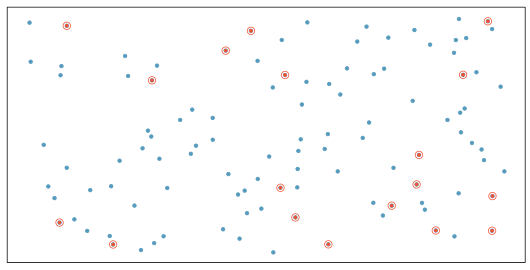
Mẫu phân tầng
Các tầng (strata) được tạo thành từ các quan sát tương tự nhau. Chúng ta lấy một mẫu ngẫu nhiên đơn giản (simple random sample) từ mỗi tầng.
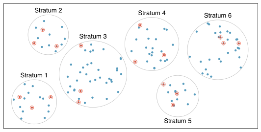
Mẫu cụm
Các cụm (clusters) thường không được tạo thành từ các quan sát đồng nhất. Chúng ta lấy một mẫu ngẫu nhiên đơn giản của các cụm, sau đó lấy mẫu tất cả các quan sát trong cụm đó. Thường được ưu tiên vì lý do kinh tế.
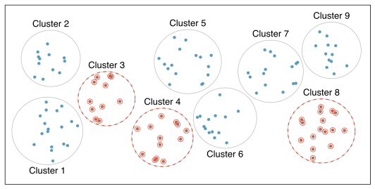
Mẫu đa tầng
Các cụm (clusters) thường không được tạo thành từ các quan sát đồng nhất. Chúng ta lấy một mẫu ngẫu nhiên đơn giản của các cụm, sau đó lấy một mẫu ngẫu nhiên đơn giản của các quan sát từ các cụm đã chọn.
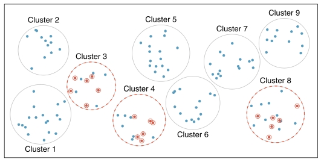
✍ Luyện tập
Một hội đồng thành phố đã yêu cầu thực hiện một cuộc khảo sát hộ gia đình tại một khu vực ngoại ô của thành phố. Khu vực này được chia thành nhiều khu dân cư riêng biệt và độc đáo, một số khu gồm những ngôi nhà lớn, một số khu chỉ có căn hộ. Cách tiếp cận nào có khả năng ít hiệu quả nhất?
- Chọn mẫu ngẫu nhiên đơn giản
- Chọn mẫu cụm
- Chọn mẫu phân tầng
- Chọn mẫu theo khối (Blocked sampling)
1.5 Thí nghiệm (thực nghiệm)
Các thuật ngữ
Đối tượng (Subject)
- Đối tượng cá nhân được lấy mẫu hoặc chỉ định cho các nhóm trong thí nghiệm.
Đơn vị thí nghiệm (Experimental unit)
- Là đối tượng chịu tác động của phương pháp can thiệp.
- Có thể không phải là đối tượng khảo sát.
Nhóm (Group)
- Tập hợp các đối tượng được xử lý bởi cùng một mức của yếu tố
Phương pháp can thiệp (Treatment)
- Là một trong các mức hoặc sự kết hợp của các mức của yếu tố chính đang được thử nghiệm.
Yếu tố (Factor)
- Là mọi loại biến số giải thích trong thí nghiệm
- Giá trị của biến số này được thiết lập bởi thí nghiệm
- Có thể là biến số định lượng hoặc định tính, gián đoạn hoặc liên tục.
- Có thể có hoặc không có ảnh hưởng đến kết quả.
Kết quả (Response)
- Là kết quả thu đo được của thí nghiệm
- Có thể gọi là biến số phản hồi hoặc biến số phụ thuộc vào các yếu tố của thí nghiệm
Yếu tố chính (Primary factor)
- Là yếu tố quan tâm hàng đầu cần tìm hiểu ảnh hưởng của nó lên kết quả
Mức (Level)
- Các giá trị khác nhau của một yếu tố
Các nguyên tắc của thiết kế thí nghiệm
- Kiểm soát (Control): Kiểm soát tác động (tiềm tàng) của các biến khác ngoài những biến đang được nghiên cứu trực tiếp.
- Ngẫu nhiên hóa (Randomize): Phân bổ ngẫu nhiên các đối tượng vào các phương pháp can thiệp, và lấy mẫu ngẫu nhiên từ quần thể bất cứ khi nào có thể.
- Lặp lại (Replicate): Trong một nghiên cứu, lặp lại bằng cách thu thập một mẫu đủ lớn. Hoặc lặp lại toàn bộ nghiên cứu.
- Phân khối (Block): Nếu có các biến đã biết hoặc nghi ngờ có ảnh hưởng đến biến phản hồi, trước tiên hãy nhóm các đối tượng vào các khối (blocks) dựa trên các biến này, sau đó ngẫu nhiên hóa các trường hợp trong mỗi khối vào các nhóm can thiệp.
Thêm về phân khối
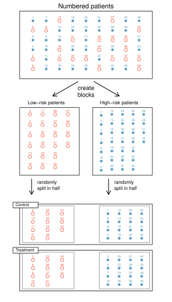
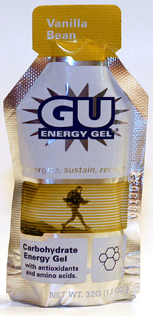
- Chúng ta muốn thiết kế một thí nghiệm để nghiên cứu xem gel năng lượng có giúp bạn chạy nhanh hơn không:
- Can thiệp: gel năng lượng
- Đối chứng: không dùng gel năng lượng
- Người ta nghi ngờ rằng gel năng lượng có thể ảnh hưởng đến các vận động viên chuyên nghiệp và nghiệp dư khác nhau, do đó chúng ta phân khối theo tình trạng chuyên nghiệp:
- Chia mẫu thành chuyên nghiệp và nghiệp dư
- Phân bổ ngẫu nhiên các vận động viên chuyên nghiệp vào nhóm can thiệp và nhóm đối chứng
- Phân bổ ngẫu nhiên các vận động viên nghiệp dư vào nhóm can thiệp và nhóm đối chứng
- Tình trạng chuyên nghiệp/nghiệp dư được đại diện như nhau trong các nhóm can thiệp và đối chứng kết quả
Tại sao điều này lại quan trọng? Bạn có thể nghĩ ra các biến khác để phân khối không?
✍ Luyện tập
Một nghiên cứu được thiết kế để kiểm tra tác động của mức độ ánh sáng và mức độ tiếng ồn đến kết quả thi của sinh viên. Nhà nghiên cứu cũng tin rằng mức độ ánh sáng và tiếng ồn có thể có tác động khác nhau đến nam và nữ, vì vậy muốn đảm bảo cả hai giới tính đều được đại diện như nhau trong mỗi nhóm. Câu nào dưới đây là đúng?
- Có 3 biến giải thích (ánh sáng, tiếng ồn, giới tính) và 1 biến phản hồi (kết quả thi)
- Có 2 biến giải thích (ánh sáng và tiếng ồn), 1 biến phân khối (giới tính) và 1 biến phản hồi (kết quả thi)
- Có 1 biến giải thích (giới tính) và 3 biến phản hồi (ánh sáng, tiếng ồn, kết quả thi)
- Có 2 biến phân khối (ánh sáng và tiếng ồn), 1 biến giải thích (giới tính) và 1 biến phản hồi (kết quả thi)
Sự khác biệt giữa biến phân khối và biến giải thích
- Các yếu tố (factors) là những điều kiện chúng ta có thể áp đặt lên các đơn vị thí nghiệm.
- Các biến phân khối là những đặc điểm sẵn có của các đơn vị thí nghiệm mà chúng ta muốn kiểm soát.
- Phân khối (blocking) giống như phân tầng (stratifying), ngoại trừ việc nó được sử dụng trong bối cảnh thí nghiệm khi phân bổ ngẫu nhiên, thay vì khi chọn mẫu.
Thêm các thuật ngữ thiết kế thí nghiệm…
- Giả dược (Placebo): phương pháp can thiệp giả, thường được sử dụng làm nhóm đối chứng cho các nghiên cứu y khoa
- Hiệu ứng giả dược (Placebo effect): các đơn vị thí nghiệm cho thấy sự cải thiện đơn giản vì họ tin rằng họ đang nhận được một phương pháp can thiệp đặc biệt
- Mù (Blinding): khi các đơn vị thí nghiệm không biết họ thuộc nhóm đối chứng hay nhóm can thiệp
- Mù kép (Double-blind): khi cả đơn vị thí nghiệm và các nhà nghiên cứu tương tác với bệnh nhân đều không biết ai thuộc nhóm đối chứng và ai thuộc nhóm can thiệp
✍ Luyện tập
Sự khác biệt chính giữa các nghiên cứu quan sát và thí nghiệm là gì?
- Thí nghiệm diễn ra trong phòng thí nghiệm trong khi các nghiên cứu quan sát thì không cần thiết.
- Trong một nghiên cứu quan sát, chúng ta chỉ xem xét những gì đã xảy ra trong quá khứ.
- Hầu hết các thí nghiệm sử dụng phân bổ ngẫu nhiên trong khi các nghiên cứu quan sát thì không.
- Các nghiên cứu quan sát hoàn toàn vô dụng vì không thể đưa ra suy diễn nhân quả nào dựa trên những phát hiện của chúng.
Phân bổ ngẫu nhiên so với Chọn mẫu ngẫu nhiên
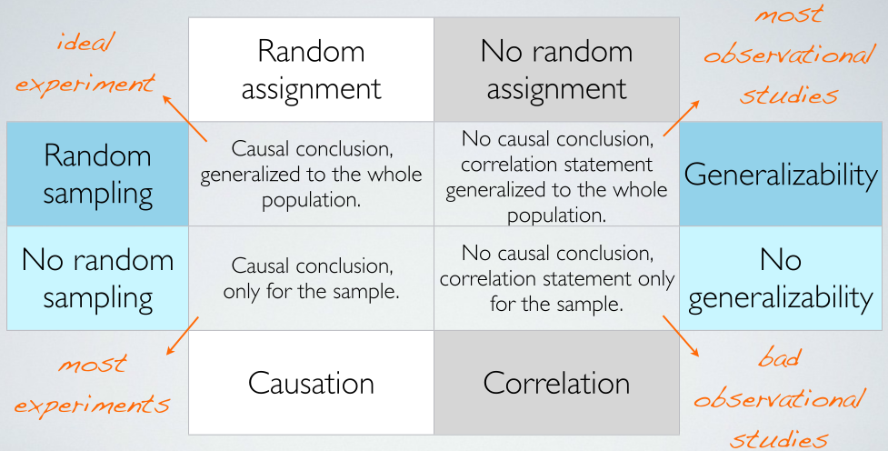
Nghiên cứu của Đan Mạch về tác động của việc hút thuốc đối với sức khỏe của thai nhi
- 1998-2002, các nhà nghiên cứu Đan Mạch theo dõi hơn 90.000 phụ nữ mang thai.
- 4.770 trong số những phụ nữ này đã cho con bú mẹ bị suy giảm thính lực.
- Nguồn gốc của vấn đề: 2.804 phụ nữ hút thuốc khi đang mang thai.
- Tuyệt đại đa số những phụ nữ này đã không tham gia một cuộc khảo sát khoa học nào.
Phân bổ ngẫu nhiên so với Chọn mẫu ngẫu nhiên
- Phân bổ ngẫu nhiên giúp kiểm soát các yếu tố gây nhiễu (confounding) trong các thử nghiệm.
- Chọn mẫu ngẫu nhiên đảm bảo các kết quả có thể được tổng quát hóa cho toàn bộ quần thể.
1.6 Case study
Điều trị Hội chứng mệt mỏi mãn tính
- Mục tiêu: Đánh giá hiệu quả của liệu pháp nhận thức - hành vi (cognitive-behavior therapy) đối với hội chứng mệt mỏi mãn tính (chronic fatigue syndrome).
- Nhóm ứng viên: 142 bệnh nhân được tuyển chọn từ các giới thiệu của bác sĩ chăm sóc ban đầu và các chuyên gia tư vấn cho một phòng khám bệnh viện chuyên về hội chứng mệt mỏi mãn tính.
- Người tham gia thực tế: Chỉ 60 trong số 142 bệnh nhân được giới thiệu tham gia vào nghiên cứu. Một số bị loại vì không đáp ứng các tiêu chí chẩn đoán, một số có vấn đề sức khỏe khác, và một số từ chối tham gia nghiên cứu.
Deale et. al. Cognitive behavior therapy for chronic fatigue syndrome: A randomized controlled trial. The American Journal of Psychiatry 154.3 (1997).
Thiết kế nghiên cứu
- Bệnh nhân được phân bổ ngẫu nhiên vào nhóm can thiệp (treatment group) và nhóm đối chứng (control group), mỗi nhóm có 30 bệnh nhân:
- Can thiệp: Liệu pháp nhận thức - hành vi – mang tính hợp tác, giáo dục và chú trọng vào hành vi. Bệnh nhân được hướng dẫn cách tăng cường hoạt động một cách ổn định và an toàn mà không làm trầm trọng thêm các triệu chứng.
- Đối chứng: Thư giãn – Không có lời khuyên nào được đưa ra về cách tăng cường hoạt động. Thay vào đó, bệnh nhân được dạy các kỹ năng thư giãn cơ bắp tịnh tiến, hình dung và thư giãn nhanh.
Kết quả
Bảng dưới đây cho thấy sự phân bổ của các bệnh nhân có kết quả tốt sau 6 tháng theo dõi. Lưu ý rằng có 7 bệnh nhân đã bỏ cuộc giữa chừng: 3 từ nhóm can thiệp và 4 từ nhóm đối chứng.
| Kết quả tốt | ||||
|---|---|---|---|---|
| Có | Không | Tổng cộng | ||
| Can thiệp | 19 | 8 | 27 | |
| Nhóm | Đối chứng | 5 | 21 | 26 |
| Tổng cộng | 24 | 29 | 53 |
Tỷ lệ có kết quả tốt trong nhóm can thiệp: \[ 19 / 27 \approx 0.70 \rightarrow 70\% \]
Tỷ lệ có kết quả tốt trong nhóm đối chứng: \[ 5 / 26 \approx 0.19 \rightarrow 19\% \]
Hiểu về kết quả
Dữ liệu có cho thấy một sự khác biệt “thực sự” giữa các nhóm không?
- Giả sử bạn tung một đồng xu 100 lần. Mặc dù xác suất đồng xu rơi vào mặt ngửa trong bất kỳ lần tung nào là 50%, chúng ta có thể sẽ không quan sát được chính xác 50 lần ngửa. Kiểu biến động này là một phần của hầu hết mọi quy trình tạo dữ liệu.
- Sự khác biệt quan sát được giữa hai nhóm (70 - 19 = 51%) có thể là thật, hoặc có thể do sự biến thiên tự nhiên.
- Vì sự khác biệt là khá lớn, nên việc tin rằng sự khác biệt đó là có thật sẽ thuyết phục hơn.
- Chúng ta cần các công cụ thống kê để xác định xem sự khác biệt có đủ lớn để bác bỏ ý kiến cho rằng nó là do ngẫu nhiên hay không.
Tổng quát hóa kết quả
Kết quả của nghiên cứu này có thể tổng quát hóa (generalizable) cho tất cả bệnh nhân mắc hội chứng mệt mỏi mãn tính không?
Những bệnh nhân này có những đặc điểm cụ thể và đã tình nguyện tham gia nghiên cứu này, do đó họ có thể không đại diện cho tất cả các bệnh nhân mắc hội chứng mệt mỏi mãn tính. Mặc dù chúng ta không thể ngay lập tức tổng quát hóa kết quả cho tất cả bệnh nhân, nhưng nghiên cứu đầu tiên này rất đáng khích lệ. Phương pháp này có tác dụng đối với những bệnh nhân có một số đặc điểm hẹp, và điều đó mang lại hy vọng rằng nó sẽ hoạt động, ít nhất là ở một mức độ nào đó, với các bệnh nhân khác.